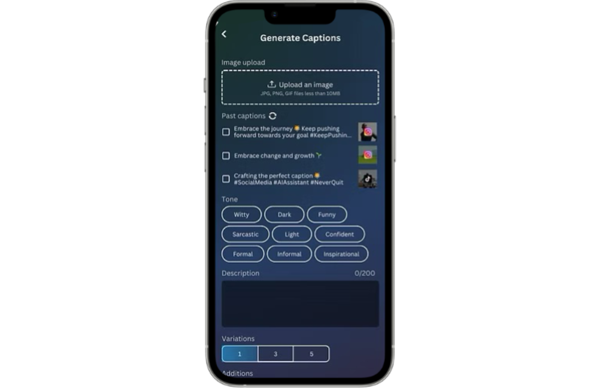

Caption
Generator
Gen AI | UX Research
The caption generator was a feature that had been designed a year prior for JABA's AI app, but it was never moved into development. Clear problems were pointed out by team members, who called for a redesign.
Leading this redesign, I had clear goals. I wanted the feature to be informed through research, and I also aimed to create something that is not just another wave in the AI surge, but that is an effective tool to our users. I’m thankful for the trust that my superiors had in my vision, and the opportunity that this project gave me to explore UX research in a startup environment.
